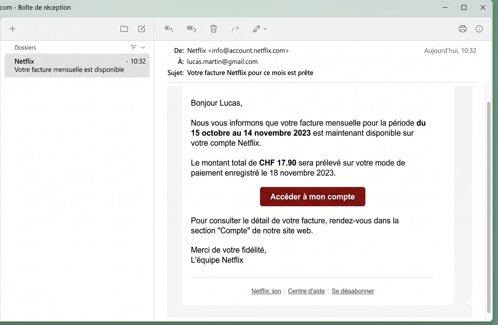
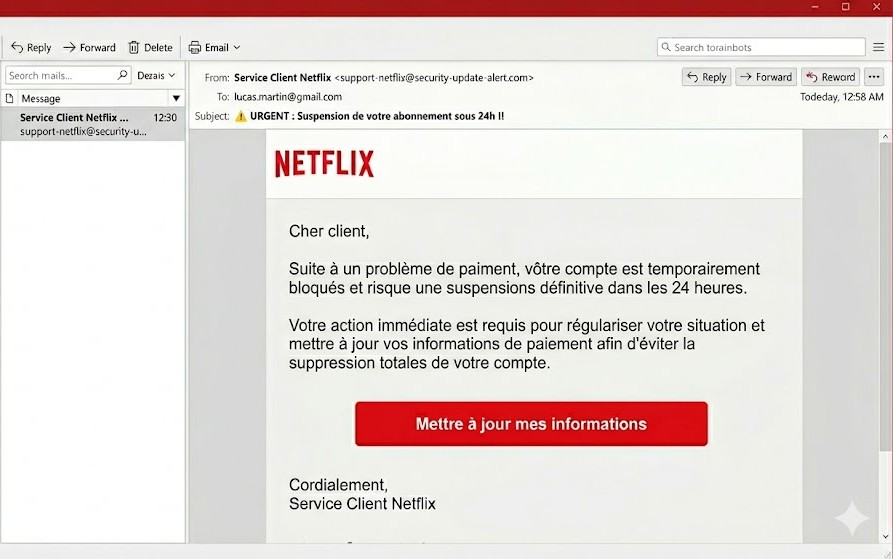

Le phishing est une cyberattaque très répandu de nos jours. Le but de cette cyberattaque est de tromper des particuliers ou des entreprise en se faisant passer pour une personne ou une institution proche ou de confiance afin de voler a la victime des informations privés, (comme les données bancaires, l’adresse, les mots de passe etc…) en générale afin de soutirer de l’argent à leurs victimes.
En général lors d’une attaque de phishing l’assaillant joue plutôt sur l’erreur humaine que sur une faille informatique. L’attaquant va envoyer un message qui insiste sur l’effet d’urgence (colis à récupérer, facture à payer compte bloqué etc..) pour faire en sorte que la victime panique et qu’elle clique sur une lien piégé ou qu’elle lui envoie directement de l’argent. Si la victime clique sur un lien piégé ou une pièce jointe, elle sera soit dirigé sur un site frauduleux qui se fait passer pour une vraie entreprise, comme la poste ou votre banque, puis lui demandera d’entrer ses données personnelles pour ensuite les utiliser ou les revendre. Mais ils peuvent également installer des malwares (logiciels malveillants) directement dans l’appareil pour avoir accès aux données personnelle de la victime sans qu’elle s’en rende compte.
La réussite de cette technique repose essentiellement sur la crédulité et le manque de formation de la victime, et des émotions comme la peur, l’empathie ou la curiosité pour inciter la victime à agir vite sans faire attention.
Un exemple courant est le faux e-mail de banque. Le message prétend que votre compte va être bloqué et vous invite à 'vérifier vos informations' en cliquant sur un lien. La page affichée ressemble au vrai site de la banque, mais l’adresse du site (URL) est légèrement modifiée. Lorsque vous entrez votre identifiant et votre mot de passe, ces informations sont envoyées directement au pirate, qui peut ensuite accéder à votre compte.
Il existe plusieurs réflexes simples pour réduire les risques :
Quand tu reçois un e‑mail ou un SMS inattendu (banque, colis, impôts…), ne clique pas sur le lien dans le message. Tape toi‑même l’adresse du site dans le navigateur ou passe par tes favoris, car les liens de phishing mènent souvent à des faux sites qui volent tes identifiants.
Sur tes comptes importants (mail, réseaux sociaux, banque, jeux, cloud), active une double authentification, par exemple un code sur ton téléphone ou une application d’authentification. Même si un pirate vole ton mot de passe avec du phishing, il aura beaucoup plus de mal à se connecter sans ce deuxième facteur.
Utilise un navigateur, un antivirus et un système d’exploitation à jour pour bloquer une partie des sites et pièces jointes malveillants. Beaucoup de recommandations insistent sur le fait de laisser les mises à jour automatiques activées, pour que les nouvelles protections contre le phishing soient installées sans que tu aies à y penser.

Figure A : Exemple d'un e-mail authentique.

Figure B : Exemple d'un e-mail de phishing.
Le phishing est aujourd’hui l’une des méthodes d’attaque les plus utilisées, car elle cible avant tout l’être humain plutôt que la machine. Comprendre son fonctionnement et adopter de bons réflexes permet de réduire fortement le risque de se faire piéger. Cette page et les mini-jeux de ce site ont pour objectif de t’aider à reconnaître plus facilement ces attaques et à réagir correctement.